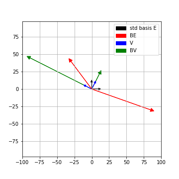

SVD - The details
Prerequisites
We’ll assume you that you have read this introductory post on singular value decomposition a.k.a SVD.
The theorem
In this post, we’ll get our hands dirty and examine how and why SVD works. But let’s first recall what it is.
We saw in the introductory post that the columns of \(V\) (let’s call them \(v_1, v_2, \ldots v_m\)) are mutually perpendicular unit vectors which form a basis of \(\mathbb{R}^m\) (a.k.a an orthonormal basis of \(\mathbb{R}^m\)).
Further \(\{A(v_i)\}\) still remain perpendicular to each other in \(\mathbb{R}^n\). The length of the vectors \(\{A(v_i)\}\) are encoded by the diagonal entries of \(\Sigma\). The unit vectors along \(\{A(v_i)\}\) can be completed to an orthonormal basis of \(\mathbb{R}^n\), which are precisely given by the columns of \(U\).
A blackbox
Before jumping to the proof, let’s reveal our secret weapon, the spectral theorem. This theorem, applied to real matrices states the following:
Wait, what ? Let’s unravel that sentence again and take the result in, bit by bit.
You give me any real square matrix \(B\) such that it is symmetric, i.e. \(B_{i,j} = B_{j,i}\). We know that \(B\) is really representing a linear map \(Q: \mathbb{R}^m \to \mathbb{R}^m\) with respect to the standard basis. But the images of the standard basis under \(Q\) of course might get distorted. So the images might no longer remain perpendicular to each other, much less continue being the standard basis.
The spectral theorem assures us however that if \(B\) is symmetric, there is a much nicer basis available, an orthonormal basis of \(\mathbb{R}^m\) in fact, which \(Q\) simply scales to different lengths!
More precisely, we can find unit mutually perpendicular vectors \(w_1, w_2, \ldots, w_m\) so that \(Q(w_i) = \lambda_i w_i\) for some scalars \(\lambda_i\). Of course these scalars are by definition the eigen-values of \(Q\), or equivalently of \(B\).
A running example and a proof
If only I had the theorems! Then I should find the proofs easily enough - Riemann”
Remember \(A\), our very down to earth \(2 \times 2\) matrix from last time
\[ A = \left( \begin{array}{cc} 6 & 2 \\ -7 & 6 \end{array} \right) \]
Now unfortunately, we cannot use the spectral theorem directly on a general \(A\) because it is not symmetric. So instead, we first manufacture a symmetric matrix \(B\) from \(A\) by letting \(B = A^TA\). In our running example,
\[ B = \left( \begin{array}{cc} 6 & -7 \\ 2 & 6 \end{array} \right) \left( \begin{array}{cc} 6 & 2 \\ -7 & 6 \end{array} \right) = \left( \begin{array}{cc} 85 & -30 \\ -30 & 40 \end{array} \right) \]
Spectral theorem applied to \(B\) guarantees that there are two perpendicular unit vectors which are simply scaled by the action of \(B\). We’ll not get into how you can find these vectors but wave the spectral theorem wand and give them to you.
\[ \begin{align*} v_1 = \left( \begin{array}{c} \frac{-2}{\sqrt{5}} \\ \frac{1}{\sqrt{5}} \end{array} \right) \ & \mathrm{ and} \hspace{2mm} Bv_1 = 100 v_1 \\ v_2 = \left( \begin{array}{c} \frac{1}{\sqrt{5}} \\ \frac{2}{\sqrt{5}} \end{array} \right) \ & \mathrm{ and} \hspace{2mm} Bv_2 = 25 v_2 \end{align*} \]
Here’s a visualization of the action of \(B\) on the standard basis and on \(V = (v_1,v_2)\). Both the bases’ lengths are scaled up a bit for clarity in the picture

So we have found an orthonormal basis \(v_1, v_2\) of \(\mathbb{R}^2\), which is very nice for \(B\). How does \(A\) act on it ?
\[ \begin{align*} Av_1 = \left( \begin{array}{c} \frac{-10}{\sqrt{5}} \\ \frac{20}{\sqrt{5}} \end{array} \right) \ & \mathrm{ and} \hspace{2mm} \| Av_1 \| = 10\\ Av_2 = \left( \begin{array}{c} \frac{10}{\sqrt{5}} \\ \frac{5}{\sqrt{5}} \end{array} \right) \ & \mathrm{ and} \hspace{2mm} \|Av_2\| = 5\\ \end{align*} \]
We see that \(Av_1\) is perpendicular to \(Av_2\) ! Further the length of \(Av_1, Av_2\) are \(\sqrt{100} = 10, \sqrt{25} = 5\), which are precisely the singular values of \(A\) by definition.
This is not a coincidence. For starters, we know \(v_1\) perpendicular to \(v_2\), i.e. \(v_1^Tv_2 = 0\). Let’s see why \(Av_1\) is perpendicular to \(Av_2\)
\[ \begin{align*} Av_1 \cdot Av_2 &= (Av_1)^T Av_2 = v_1^T A^T A v_2\\ & = v_1^T Bv_2 = v_1^T 25v_2\\ & = 25 v_1^Tv_2 = 0\\ \end{align*} \]
Thus \(Av_1, Av_2\) are perpendicular to each other. As an exercise, using the fact that length of a vector \(\|x \|= x^T x\), try computing the lengths of \(Av_i\).
More generally, the same reasoning tells us the following:
Thus, the orthonormal eigenbasis of \(B=A^TA\) given by the spectral theorem is exactly \(V\) in the SVD of \(A = U\Sigma V^T\) !
Summary
Given an \(n\times m\) matrix A, here are the steps to find the SVD of \(A\):
- Form the \(m \times m\) symmetric matrix \(B= A^TA\)
- The spectral theorem gives us an orthogonal eigen-basis \(v_1,v_2, \ldots, v_m\) for \(B\) of \(\mathbb{R}^m\) with eigenvalues \(\lambda_1 \geq \lambda_2 \geq \ldots \lambda_m\)
- \(V\) is just the \(m\times m\) matrix \(\left(\begin{array}{cccc}v_1 & v_2 & \ldots & v_m \end{array}\right)\)
- \(\Sigma\) is the \(n\times m\) matrix where all non-diagonal entries are 0 and \(\Sigma_{i,i} = \sqrt{\lambda_i}\)
- \(AV\) is an \(n\times m\) matrix made of mutually perpendicular columns
- Scaling the columns of \(AV\) to unit vectors, complete it to an orthonormal basis of \(\mathbb{R^n}\). This orthonormal basis gives you the \(n\times n\) matrix \(U\).
- Finally,
\[A = U \Sigma V^T \]
For our running example, we see that this corresponds to
\[ \left( \begin{array}{cc} 6 & 2 \\ -7 & 6 \end{array} \right)= \left( \begin{array}{cc} \frac{-1}{\sqrt{5}} & \frac{2}{\sqrt{5}} \\ \frac{2}{\sqrt{5}} & \frac{1}{\sqrt{5}} \\ \end{array} \right) \left( \begin{array}{cc} 10 & 0 \\ 0 & 5 \\ \end{array} \right) \left( \begin{array}{cc} \frac{-2}{\sqrt{5}} & \frac{1}{\sqrt{5}} \\ \frac{1}{\sqrt{5}} & \frac{2}{\sqrt{5}} \\ \end{array}\right) \]
Footnotes
Citation
@online{bhaskhar2020,
author = {Bhaskhar, Nivedita},
title = {SVD - {The} Details},
date = {2020-08-03},
url = {https://nivbhaskhar.github.io/blog/posts/2020-08-03-SVD-details.html},
langid = {en}
}